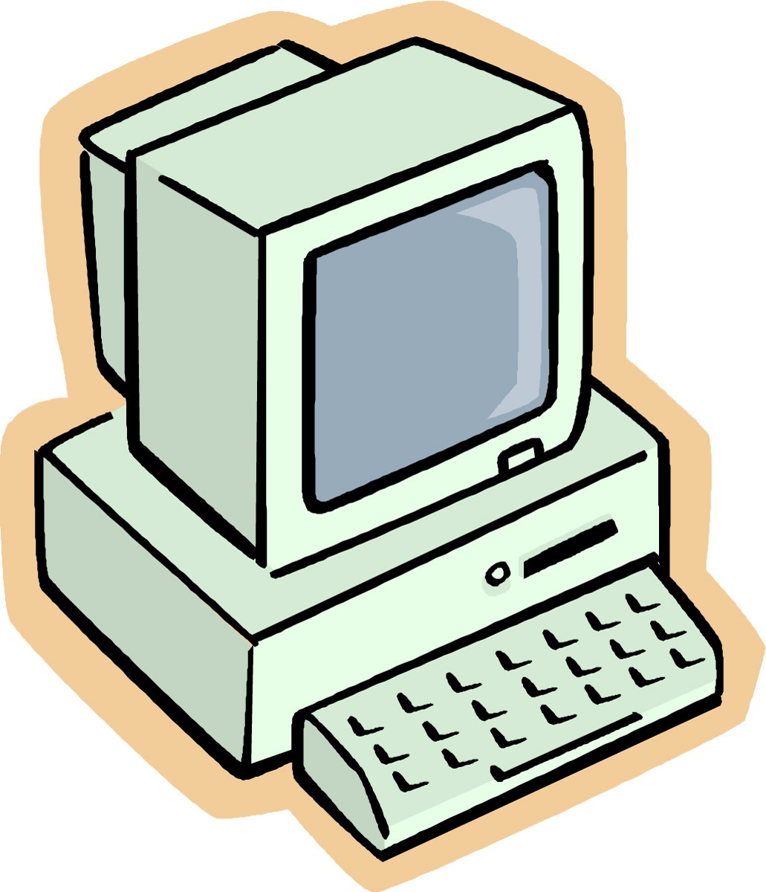
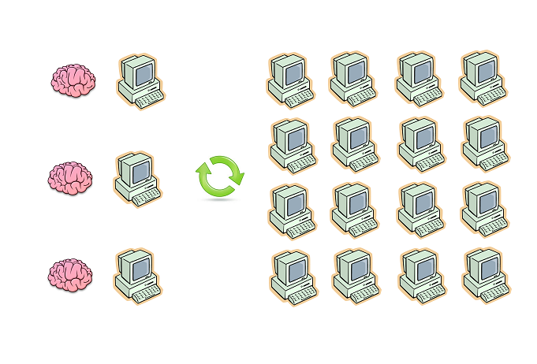
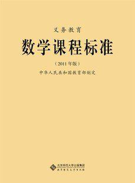
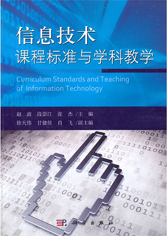

class: center, middle # IT实验课 ### IT Workshop --- class: center, middle ## 提纲 ###1. 能力模型 ###2. 课程体系 ###3. 基础模块 ###4. 高级模块 ###5. 专题模块 ??? 这些模块是互相独立的。 今天我们主要介绍基础模块，提高模块等下学期才会开始。 专题模块安排在寒暑假、以及每个学期期中二代4~6周。 基础模块的学员都可以报名参加专题模块，需要平时成绩和分级考试才可以参加提高模块。 --- class: center, middle # 能力模型 ??? 很多家长都问：这门课有什么用？与其它课程是什么关系？ 下面我们通过具体的能力模型来介绍这门课。 这门课程，是根据职场能力模型倒推，制定出义务教育阶段的培养目标。。 --- class: center, middle # IT = 信息技术 ??? 信息技术一般分为三部分： 1. 信息处理 2. 信息传输 3. 信息存储 其中，传输和存储可以放到大学专门院系学习。我们需要从小培养的是信息处理能力。 什么是信息处理？ 就是输入的信息与输出不同，中间需要加以处理。 或者说，所有智力活动都是信息处理。 --- class: center, middle # IT = 智力活动 ??? 1. 智力活动包括人脑、计算机等IT设备。就像运输包括人力、畜力、汽车、火车、空运...... 2. 并非所有智力活动都适合交给计算机进行。就像不是所有的地方都适合开车。 3. 同样的任务，人脑和计算机的完成方式是不同的。就像走路和开车的动作完全不同。 --- class: center, middle </img> <img src="img/th.jpg" width=64 align=middle></img> </img> ??? 1. 问题分析：完成任务的过程包括哪些智力活动？平时也要多观察别人的思维。 2. 设备选择：心算、纸笔、算盘、计算机、个人计算机、服务器、专用硬件...... 3. 任务分配：哪些智力活动分配在哪些设备？把一部分智力活动转移到计算机中。 4. 结果合成：流畅自如地合成交付，就像全部人脑完成一样。 能调动多少计算设备，将是个人竞争力的重要因素。 --- class: center, middle </img> ??? 团队的智力活动 -- 复杂 1. “设备”的差异更复杂，有大量局部的协作关系。 2. 中间结果的传递更复杂。 3. 外部攻击更容易。 能调动多大的团队，决定一个管理者的竞争力。 就像管理一个城市的交通，与一个司机，是两种不同的能力。 --- class: center, middle #Thinking in IT ??? ITW的培养目标，是强化以上两种方式的智力活动。 1. 养成人机协同的智力活动能力。 2. 提前熟悉信息时代的协作方式。 也许不是每个家长都要把孩子培养成中国首富。 其实海淀区首富这目标就非常高了。 更实际的目标，是所在年级的佼佼者... 或者所在年级的佼佼者创业时，成为他的首发团队一员。 --- class: center, middle # 课程体系 --- class: center, middle # 设计依据 </img> </img> ??? ITW的基础模块围绕数学和信息技术的国家课程标准，扩展少量必需的知识。 提高模块和专题模块，根据（非IT）实际工作需要的能力结构设计。 IT专业的实际工作，我们会另外设计专门课程，不进入ITW。 --- class: center, middle # Workshop # 研讨+创作+实习 ??? ITW不是数学补习课，所使用的数学知识： 1. 在全日制学校学习。 2. 向ITW其他同学学习。（推荐：与实际场景相似。） 3. 参加数学补习课。（可以提供选课指导。） 课堂上有练习时间，但建议平时多练习，课上时间可以更多交流探讨。 --- class: middle # 引导课 ###1. 基础模块的教学方式。 ###2. 第一学段（1~3年级）的数学知识。 ###3. 流程图、[语法图(Syntax diagram)](http://en.wikipedia.org/wiki/Syntax_diagram)、[BNF](http://en.wikipedia.org/wiki/Backus%E2%80%93Naur_Form) ###4. javasrcipt语法。 ??? 家长应提前教会计算机基本操作： 1. 开机、关机。 2. 安装常见软件。 3. 中文输入。 4. 文件管理：保存、查找、删除、创建、命名等。 5. 常见的网站账号注册。 --- class: center, middle # 正式课程 ###1. 基础模块：把数学知识运用到计算机上。 ###2. 高级模块：建立并管理人机协同的团队。 ###3. 专题模块：围绕一个具体作品独立实践。 ??? 基础模块，会一直同步推进。 由于学员的数学课进度不同，根据课程标准把每学期的数学课分为2~3部分作为同步的单位。 高级模块主要针对尖子生，学习团队乃至社区领袖的相关知识。 参与的学员需要经过考试+面试。考官不能阻止学员，但会给出参考意见。 高级模块并培养专业程序员。 专题模块通常需要16~20课时，加上操作时间。 包括市场上流行的机器人、单片机等专题，它们通常基于特定商业产品，学员的创作空间很小。 以及ITW独立规划设计的专题，更注重独立创作的能力，使用更底层的器件。 --- class: middle #时间安排 ###1. 引导课：滚动进行。2+次课，每次3课时。 ###2. 基础模块：春秋学期。每学期10次课，每次3课时。 ###3. 高级模块：导师制，按学年安排。独立立项通过之前，协作导师在ITW中的职责（助教、课程设计、课件开发...）。 ###4. 专题模块：大专题设在寒暑假，集中3~5天全部时间。小专题设在春秋学期中间，4~6次课，每次3课时。 ??? 其中，小专题和基础模块时间错开，可以同时报名参加。 高级模块学员根据工作结果，同工同酬。可以用于缴付学费。 --- class: center, middle # 基础模块 --- class: center, middle </img> </img> </img> ??? 基础模块的教学方式： 1. ITW已经安排了一些任务，学员要让计算机去完成它们。也就是说，学员必须把自己的数学知识“教给”计算机。 2. ITW将自动不定时调用各位学员的软件，自动统计结果计算分数。 3. 每个通过考试的软件，会获得ITW颁发的证书。 4. 鼓励学员制作DIY教程，表现优异的软件作者，他们的教程将进入ITW图书馆供其他学员学习。 注意：你会不算，你的计算机会了才算。 --- class: middle #第一学段（1~3年级） ###* 数的认识：比较大小（整数、分数、小数） ###* 数的运算：小小计算器（整数，原生乘除法） ###* 数的运算：计时器（60、24进制） ###* 图形与位置：字符方阵 --- class: middle # 第二学段（4~6年级） ###* 数的认识：最小公倍数和最大公因数 ###* 数的认识：自动转化器（小数、分数、百分数） ###* 数的认识：质数判定器 ###* 数的认识：自动排序器（小数，多种算法） ###* 数的运算：小小计算器（小数、分数、DIY加减乘除法） ###* 图形与位置：比例尺 --- class: middle # 第三学段（7~9年级） ###* 数的运算：小小计算器（有理数、混合运算、角度） ###* 整式与分式：因式分解器 ###* 方程与方程组：自动配方器（一元二次方程） ###* 方程与方程组：自动消元器（二元一次方程组） ###* 不等式与不等式组：寻找解集 ###* 图形与坐标：函数曲线生成器 ###* 数据分析：小小计算器（平均数、众数、加权平均数） --- class: middle # 通用内容 ###1. 认识计算量 ###2. 算法交流并表达自己的看法（课程标准中归入“数的运算”） ###3. 我的工具链：git、markdown、UML、加密、数字签名... ###* 式与方程、正比例与反比例、函数等融合在各任务中 --- class: center, middle # 高级模块 --- class: center, middle </img> <img src="img/th.jpg" width=32 align=middle></img> </img> </img> ??? 高级学员，主要学习如何以人机协同的方式，设计并管理人机协同的团队。 注意： 1. 不是以人工方式管理。 2. 不是管理纯人类团队。 3. 不是管理纯机器集群。 --- class: middle ###* 助教：提前完成课程，协助老师讲解，了解其他同学的算法，观察其他同学的思维过程并填写记录。 ###* 工业级语言：golang、汇编。 ###* 协议与规则：关注前沿的【技术+法律+金融】的交叉创新模式。 ###* ITW产品规划开发：主要负责课堂一级的自动化工具规划开发。 ??? 管理，从同学开始。 有高级模块学员参与的基础模块课程，教师尽量通过高级学员回答基础学员的问题。 在老师指导下，阅读http、bittorrent、DHT、bitcoin等技术协议，学习CMM、ISO等软件工程标准以及敏捷开发等协作模式。 --- class: center, middle # 专题模块 --- class: middle # 硬件DIY ###* 加法器（面包板） ###* 小小web server（单片机） ###* 冷却控制器（单片机） ###* 8bit CPU（面包板） ###* 组装机器人 ??? 其中组装机器人专题使用现成部件，主要工作是组装，软件工作较少。 --- class: middle # 网页小游戏 ###1. 字符方阵 ###2. 大炮打飞机（字符版） ###3. 吃豆豆 ###4. 大炮打飞机（像素版） ###5. 创业者（限高级模块学员） ??? --- class: center, middle ## huangyg@xuemen.com ??? 报名建议： 1. 基础模块加专题模块。 2. 专题模块有一定的连贯性，最好能连续参加。 ---